About Our Village
Chennayyavalasa is a beautiful and peaceful village located in Jalumuru Mandal of Srikakulam District, Andhra Pradesh. The village is situated approximately 3 km from Jalumuru, the mandal headquarters, 2 km from Budithi, and 1.5 km from Namanapeta Junction on the Srimukhalingam–Challavanipeta Road.
Surrounded by lush greenery and the Vamsadhara Left Sub Canal, Chennayyavalasa is at its most scenic during the monsoon and winter seasons, when vast paddy fields transform the landscape into a breathtaking sight. The picturesque Chennayyavalasa Hill, located on the western side of the village, enhances its natural beauty, while the Vamsadhara Left Main Canal serves as a vital source of irrigation, supporting agriculture throughout the year.
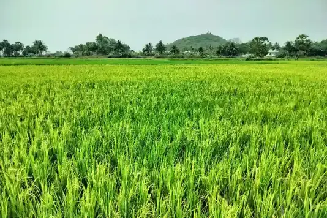
Agriculture and fishing are the primary occupations of the villagers, forming the backbone of the local economy. The village's fertile land, abundant water resources, and strong agricultural traditions have enabled generations of families to build sustainable livelihoods while preserving its rich cultural heritage and close-knit community spirit.
According to the 2011 Census, Chennayyavalasa has a population of 989 residents living in 261 households. The village is well known for its peaceful environment, warm hospitality, and harmonious way of life, making it an excellent example of rural Andhra Pradesh.
Chennayyavalasa proudly embodies the values of Unity, Prosperity, and Heritage. By blending natural beauty, traditional agriculture, and a strong sense of community, the village offers a vibrant, welcoming, and sustainable environment for both residents and visitors alike.
Culture & Occupation
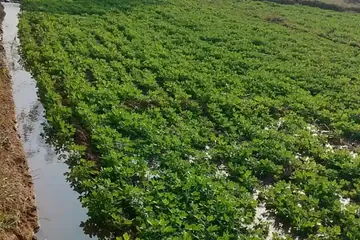
Farming
The backbone of our village. We cultivate a variety of crops to sustain our community and economy.
- Groundnut & Rice
- Millets & Finger Millets
- Black & Green Gram
- Sesame Seeds
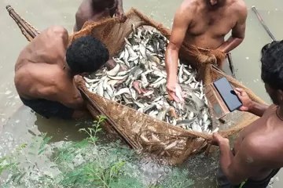
Fishing
Fishing is the primary occupation for the majority of the village, specifically the Neyyala community, who make up 60% of the population. They embark on daily fishing expeditions, a traditional practice locally known as 'Veta'.
- Village Ponds
- Flowing Rivers
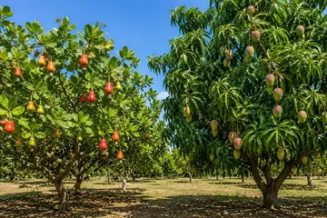
Horticulture & Orchards
During the summer season, many families rely on the cultivation of mangoes and cashews grown in the hilly metta lands on the western side of the village.
- Mango Plantations
- Cashew Estates
Facilities & Services
Grandhalayam
(Library)
Post Office
Grama Panchayat
Office
Grama Sangam
Elementary Education
Anganwadi
Center
Ration Depot
Matsyakara
Society
Places of Worship
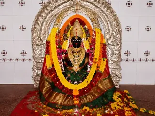
Asirithalli Ammavaru
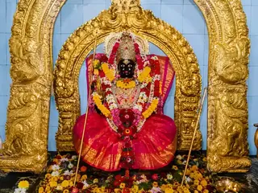
Pathapatnam Thalli
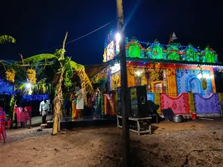
Srirama Mandiram
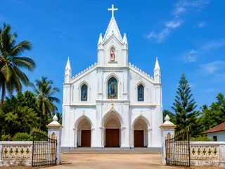
Church
Panchayat Administration
Important Contact Persons
Village Glimpses
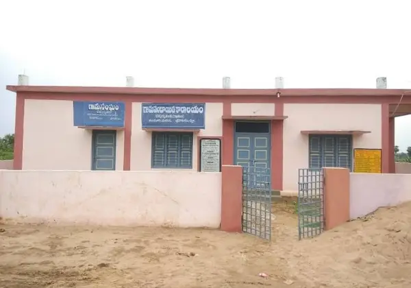
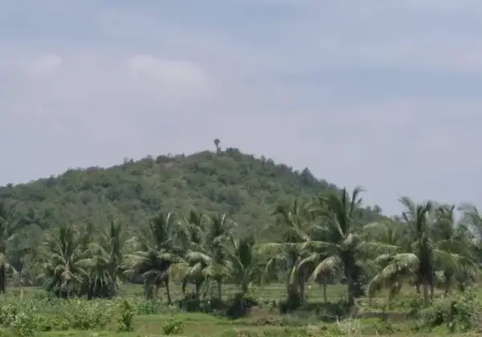
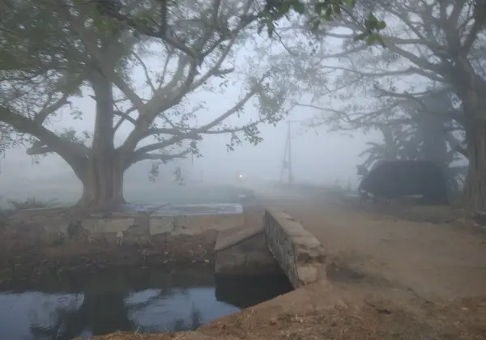
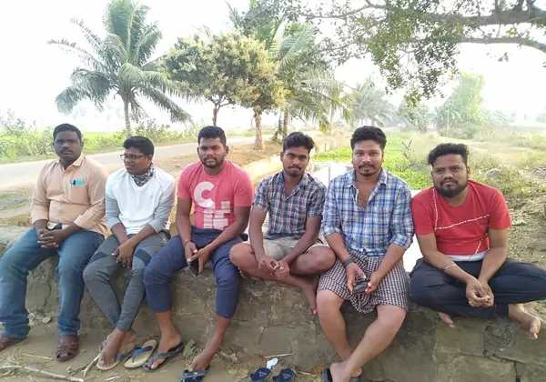
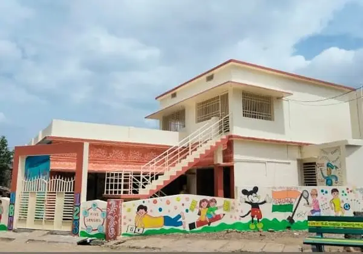
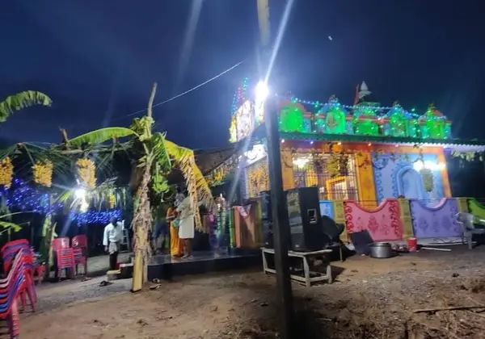
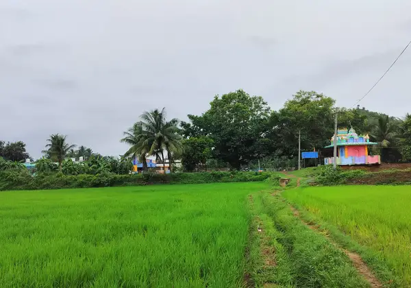
Find Us
Address
Chennayyavalasa village and post,
Chennayyavalasa Panchayat, Jalumuru mandalam,
Srikakulam District, Tekkali division,
Andhra Pradesh, 532432.
Distances from Village
- Srimukhalingam Temple 12 km
- Narasannapeta Town 18 km
- Hiramandalam 29 km
- Tekkali 31 km
- Pathapatnam 38 km
- Srikakulam City 40 km